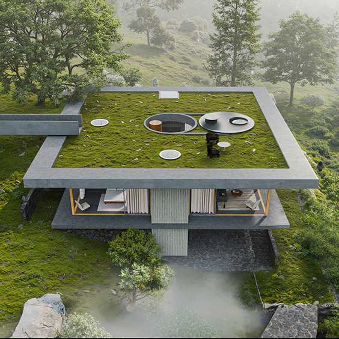

DRAWING AS PRACTICE / BBJ
Thinking on paper.
Observe the whole. Move closer. Discover the detail.
A line is a beginning.
Drawing offers a way to read a place, test an idea and communicate a spatial relationship. This page collects the visual process behind the portfolio.


These are supplied sample images; final studies and credits are pending.